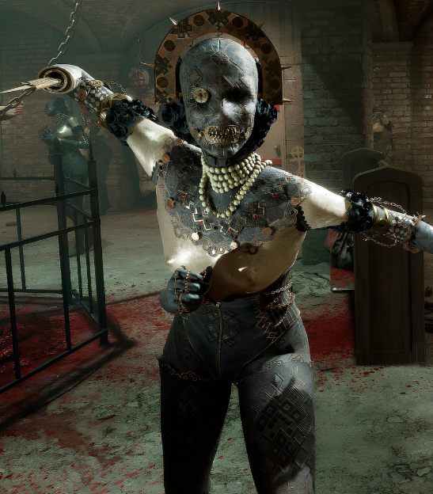
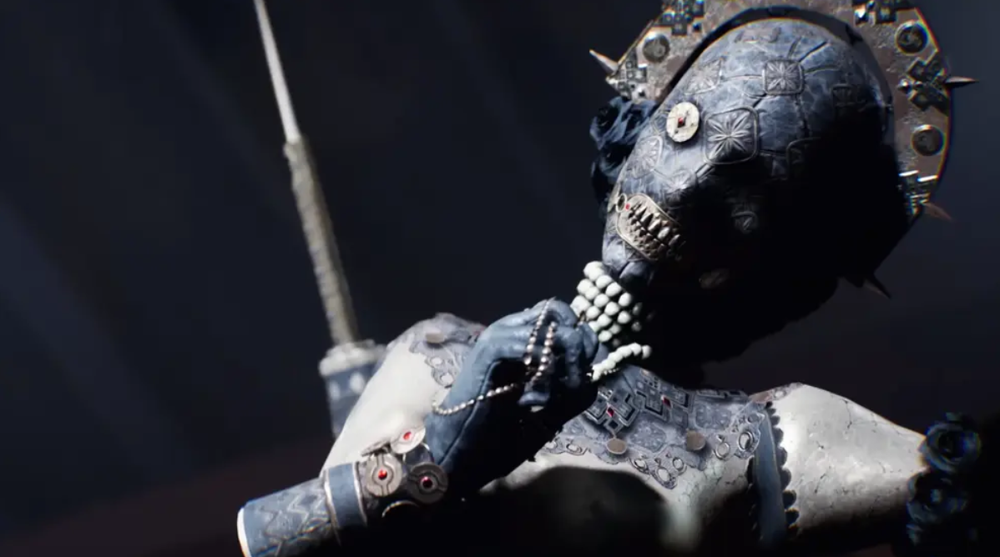

Лилия Богомолова
Локация: Курорт
Оружие: Лезвие-протез
Лилия Богомолова (ориг. Liliya Bogomolova) — антагонист игры The Outlast Trials, русская мессия, которая якобы разговаривает с Богом, одна из экс-попов и главный актив на объекте Синьяла, в корпорации Мёркофф.
Биография
Лилия родилась в 1928 году в семье беглых помещиков, которые покинули Россию после начала революции 1917 года. После чего семья проживала в Париже во Франции, где мать с самого рождения жестоко относилась к своей дочери. Судя по всему, мать завязывала дочери глаза, и кормила её только грудью. При этом мать никогда ничего не говорила при ней, из-за чего Лилия никогда не слышала её голос. Первые 10 лет своей жизни Лилия провела в ящике, никогда не лицезрев солнечного света.
25 марта 1939 года парижский полицейский проникает в дом, и обнаруживает изголодавшуюся дикую девочку Лилию, которую держали в самодельной камере. К тому время мать уже скончалась при неясных обстоятельствах. Полицейский стал первым человеком, которого увидела Лилия в своей жизни. К сожалению из-за того, что девочка не умела разговаривать, полиции не удалось узнать всех подробностей. Пока власти усердно искали ответственных за её состоянию, Лилию отправляюсь в сиротский католический приют Святого Гаспара.
В приюте Лилия довольно быстро научилась разговаривать, заявляя, что с ней начал говорить сам Бог. Другие сиротские девочки поначалу сторонились её, ведь Лилия отличалась от них, и несколько раз даже пыталась попить молоко из груди монахини. Когда Лилия научилась говорить, она стала одержимой Библией, но другие девочки начали считать её довольно обаятельной. Сама же Лилия рассказала им о всех тяготах своего дикого детства.
Охота на нацистов:
Когда началась Вторая мировая война, нацистские войска вторглись на территорию Советского союза, и Господь якобы сказал Лилии, что она русская Жанна Д'Арк, и велел ей называться Богомоловой. По словам Бога, её святая миссия заключается в освобождении исторической родины, города Ленинграда, где из-за нацистов началась блокада. В 1941 году Лилия пешком отправилась в большой поход от Парижа в Ленинград, и в конце концов ей удалось добраться до туда.
В Ленинграде она доказала свою фамилию Богомолова, и не только, как богомольная, но и как хищник богомол. Лилия Богомолова начала беспощадно убивать нацистских солдат, вооружившись одним лишь ножом. Она пряталась в кучах мёртвых окоченелых тел, считая, что во время этой святой миссии ещё защищает сам Бог.
В 1943 году нацистские войска начали отступать, и в это время Лилию Богомолову всё-таки схватывает один из немецких офицеров. Однако Лилия не собиралась так просто сдаваться, и поэтому ударила его ножом по лицу. Однако офицер в отместку отрезает ей правую руку, но после того, как Лилия начала проклинать его за это, он лишает её ещё и языка. Лилия Богомолова оказалась в длительном плену у нацистов, с которым она покинула Советский союз и дошла до Италии. В городе Генуа её собирались посадить на судно до Аргентины, но перед этим Лилия начала молиться, и тогда произошло чудо. Судя по всему, её язык магическим образом восстановился, и теперь она могла говорить божьим голосом и заговаривать других людей.
После этого Лилия заговорила нацистских солдат, внушив им расправиться с немецким офицером, который некогда лишил её руки и языка. После чего Лилия Богомолова сбегает из нацистского плена, и скрывается в лесах Восточной Европы.
The Outlast Trials
Проект «Тенева 2»
Поведение сестры Лилии, отличающееся скрытностью и точностью, несколько отличается от поведения других Первичных Активов, поскольку она не бродит бесконечно по окрестностям в поисках Реагентов . Вместо этого она терпеливо прячется и атакует, если Реагент приближается к ней или поворачивается к ней спиной, оставаясь тихой, если только не преследует кого-то активно. Она говорит шипящим смехом с эффектом запаздывающего эха. По сравнению с другими Первичными Активами, у неё есть уникальная способность подчинять Реагентов (подобно «Прыгуну» или заряженной атаке Самозванцев ) , заставляя Реагентов отбрасывать её, пытаясь остановить атаку, иначе она их убьёт. Это можно сделать быстрее, если у атакованного Реагента есть кирпич или бутылка в инвентаре, другой Реагент прерывает её атаку или если используется усилитель «Уклонение» . Когда Реагенты пытаются использовать определённые действия, чтобы избежать подчинения, например, перепрыгнуть через неё, она вместо этого атакует их взмахом.
Её агрессивные действия гораздо тише, точнее и осторожнее по сравнению с другими преследующими её Ex-Pop. Как только она теряет цель, она прячется (также подобно Pouncer) и атакует любого, кто подходит слишком близко или поворачивается к ней спиной. Если её окружают похожие манекены в её тренировочных локациях, её трудно заметить, если она не движется. Как только она перестаёт двигаться и ведёт себя как манекен, реагенты не могут правильно её обнаружить, так как это будет похоже на обнаружение обычного манекена, а не самой Prime Asset. Это делает практически невозможным отличить её от других манекенов, если только они не увидят, как она естественно оглядывается, или не заметят дополнительный манекен в том же районе. Однако внимательные реагенты также могут иметь больше шансов отличить Лилию от её манекенов, поскольку она может имитировать только одну позу манекена — когда она наклоняется, сложив руки вместе в молитвенном жесте. Некоторые вариации, такие как «Разъяренные враги» и «Не шуми», не позволят увидеть ее светящиеся или окровавленные глаза, но она никогда не будет носить амулет, когда Реагентам нужно будет собрать их в рамках дополнительной задачи из задания «Собери амулеты». Вариация «Смертоносный основной актив» не позволит ей убить Реагента с одного удара, так как этот эффект применяется только при нанесении удара по цели.
Когда поблизости нет реагентов, Лилия будет вынуждена отступить к посадочным воротам и появиться в том же месте, где находятся реагенты. После передислокации Лилия некоторое время будет бродить поблизости, прежде чем спрятаться или слиться с окружающей средой, превратившись в манекен. Во время её передвижения реагенты смогут слышать её естественный голос, который становится слышимее по мере приближения, а также звуки украшений из её костюма. Когда Лилия видит или слышит поблизости реагент, она иногда может нарушить своё скрытное поведение и попытаться незаметно проникнуть в его последнее известное местоположение или начать погоню, если сможет его увидеть.
Галерея
